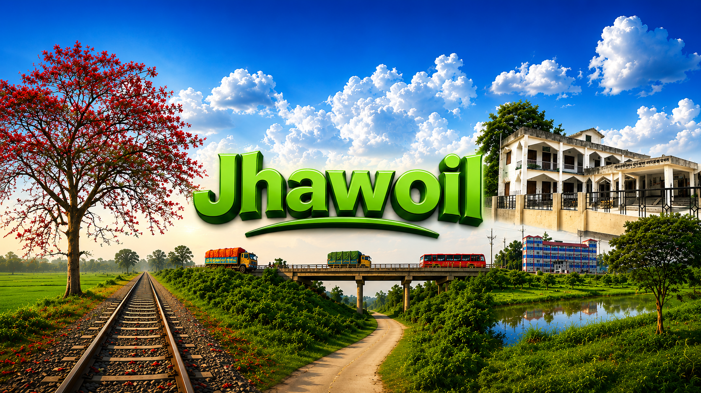
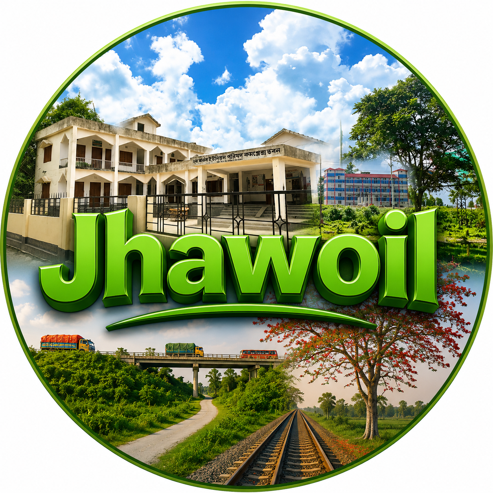

পূর্ণাঙ্গ পরিচিতি, ইতিহাস, ঐতিহ্য, সংস্কৃতি ও জীবনচিত্র। সিরাজগঞ্জ জেলার কামারখন্দ উপজেলার এক অপরূপ প্রাকৃতিক সৌন্দর্য ও সম্প্রীতিতে ঘেরা আদর্শ জনপদ।
Complete overview, history, tradition, culture, and lifestyle. An ideal village surrounded by breathtaking natural beauty and harmony in Kamarkhanda, Sirajganj.
ঝাঐল গ্রাম বাংলাদেশের উত্তরাঞ্চলের ঐতিহ্যবাহী জেলা সিরাজগঞ্জের কামারখন্দ উপজেলার অন্তর্গত একটি সুপরিচিত ও ইতিহাসবাহী জনপদ। যমুনা নদীর পলিবিধৌত উর্বর ভূমিতে গড়ে ওঠা এই গ্রাম প্রাকৃতিক সৌন্দর্য, শিক্ষা, সংস্কৃতি, কুটির শিল্প, সামাজিক সম্প্রীতি এবং ঐতিহাসিক গৌরবের জন্য পরিচিত।
Jhawoil Village is a well-known historical settlement in Kamarkhanda Upazila of Sirajganj district in northern Bangladesh. Developed on the fertile land washed by the Jamuna River, it is known for its natural beauty, education, culture, cottage industries, and pride.
ঢাকা-রাজশাহী মহাসড়কের পাশে অবস্থিত হওয়ায় ঝাঐল যোগাযোগ ব্যবস্থার দিক থেকেও গুরুত্বপূর্ণ। ঝাঐল ওভারব্রিজ এই অঞ্চলের অন্যতম পরিচিত স্থাপনা, যা প্রতিদিন হাজারো মানুষের যাতায়াত সহজ করে তুলছে। এটি শুধু একটি গ্রাম নয়; এটি ইতিহাস, ঐতিহ্য, শিক্ষা, সংস্কৃতি এবং মানুষের আবেগের এক জীবন্ত প্রতীক।
Being situated beside the Dhaka-Rajshahi highway, Jhawoil is also important in terms of communication. The Jhawoil Flyover is a renowned landmark here, easing the daily commute of thousands. It is not just a village; it's a living symbol of history, tradition, and human emotion.
ঝাঐল নামের উৎপত্তি নিয়ে স্থানীয়ভাবে বিভিন্ন জনশ্রুতি প্রচলিত রয়েছে। ধারণা করা হয়, বহু বছর আগে এই অঞ্চলটি ঝাউ জাতীয় গাছ, খাল-বিল ও জলাভূমিতে পরিপূর্ণ ছিল। "ঝাউ" শব্দ থেকে ধীরে ধীরে "ঝাঐল" নামের উৎপত্তি হয়েছে বলে অনেকে মনে করেন।
There are local myths regarding the origin of the name Jhawoil. It is believed that many years ago, this region was full of Jhau trees and wetlands. Many believe the name "Jhawoil" gradually originated from the word "Jhau".
আবার কেউ কেউ বলেন, স্থানীয় আঞ্চলিক ভাষা ও সময়ের পরিবর্তনের মাধ্যমে এই নাম বর্তমান রূপ লাভ করে। যদিও লিখিত ইতিহাস খুব বেশি পাওয়া যায় না, তবুও লোকমুখে প্রচলিত কাহিনিগুলো আজও গ্রামের ঐতিহ্যের অংশ।
Others say the name took its current form through changes in local dialect over time. Although written history is scarce, these oral stories remain a part of the village's tradition.
প্রাচীনকালে ঝাঐল ছিল নদী ও কৃষিনির্ভর একটি জনপদ। যমুনা নদীর পলিমাটি জমিকে অত্যন্ত উর্বর করে তোলে এবং কৃষিকে কেন্দ্র করে ধীরে ধীরে জনবসতি গড়ে ওঠে। নদীপথ ছিল সেই সময়ের প্রধান যোগাযোগ মাধ্যম। ব্যবসায়ী ও ভ্রমণকারীরা নদীপথে বিভিন্ন অঞ্চলে যাতায়াত করত। ফলে ঝাঐল ধীরে ধীরে ব্যবসা-বাণিজ্য ও সামাজিক কর্মকাণ্ডের একটি গুরুত্বপূর্ণ কেন্দ্রে পরিণত হয়।
In ancient times, Jhawoil was a river and agriculture-dependent settlement. Jamuna River's fertile soil helped build the community around agriculture. River routes were the primary communication medium, eventually turning Jhawoil into a vital center for trade and social activities.
ব্রিটিশ শাসনামলে ঝাঐল গ্রাম শিক্ষা ও জ্ঞানচর্চার জন্য বিশেষ পরিচিতি লাভ করে। এই গ্রামের সবচেয়ে বড় গৌরব হলো উপমহাদেশের বিখ্যাত গণিতবিদ যাদব চন্দ্র চক্রবর্তী-র জন্মস্থান হওয়া। তাঁর রচিত গণিতের বই সমগ্র ভারত উপমহাদেশের স্কুলগুলোতে পাঠ্যপুস্তক হিসেবে পড়ানো হতো। সহজ ও বাস্তবভিত্তিক গণিত শিক্ষার জন্য তিনি "পাটিগণিতের সম্রাট" নামে পরিচিতি লাভ করেন। আজও ঝাঐলের মানুষ তাঁর স্মৃতিকে গভীর শ্রদ্ধার সাথে স্মরণ করে।
During the British era, the village gained fame for education. Its biggest pride is being the birthplace of Jadab Chandra Chakravarti. His math books were used as textbooks across the subcontinent. Known as the "Emperor of Arithmetic," his memory is still highly respected by locals.
বাংলাদেশের মহান মুক্তিযুদ্ধের সময় ঝাঐল গ্রাম-এর মানুষ স্বাধীনতার পক্ষে গুরুত্বপূর্ণ ভূমিকা পালন করেন। অনেক তরুণ মুক্তিযুদ্ধে অংশগ্রহণ করেন এবং দেশ স্বাধীন করার জন্য জীবন বাজি রাখেন। মুক্তিযুদ্ধের স্মৃতি আজও গ্রামের মানুষের আবেগ ও গর্বের অংশ হয়ে আছে।
During the Great Liberation War of Bangladesh, the people of Jhawoil Village played a crucial role for independence. Many youth participated in the war, risking their lives. This memory remains a part of their emotion and pride.
ঝাঐল গ্রাম সিরাজগঞ্জ জেলার কামারখন্দ উপজেলার অন্তর্গত। ঢাকা-রাজশাহী মহাসড়কের পাশে অবস্থিত হওয়ায় এটি অত্যন্ত গুরুত্বপূর্ণ যোগাযোগ কেন্দ্র। যমুনা নদীর পলিবিধৌত সমভূমিতে অবস্থিত হওয়ায় এখানকার মাটি কৃষির জন্য অত্যন্ত উপযোগী। চারপাশে সবুজ মাঠ, খাল-বিল ও গ্রামীণ পরিবেশ গ্রামের সৌন্দর্য বৃদ্ধি করেছে।
Jhawoil Village is under Kamarkhanda Upazila of Sirajganj. Being next to the Dhaka-Rajshahi highway makes it a vital communication hub. Situated on the Jamuna River plains, its soil is highly suitable for agriculture. Green fields and rural environments enhance its beauty.
বাংলাদেশের ছয় ঋতুর সৌন্দর্য ঝাঐল গ্রাম-এ স্পষ্টভাবে দেখা যায়। বর্ষায় চারপাশে সবুজ প্রকৃতি প্রাণ ফিরে পায়, শরতে কাশফুল ও নীল আকাশ সৌন্দর্য বাড়ায়, হেমন্তে সোনালি ধানের ক্ষেত মনোমুগ্ধকর দৃশ্য তৈরি করে এবং শীতে কুয়াশাচ্ছন্ন সকাল গ্রামকে আরও আকর্ষণীয় করে তোলে। পাখির ডাক, মেঠোপথ ও নির্মল বাতাস গ্রামের পরিবেশকে শান্ত ও প্রাণবন্ত করে তোলে।
The beauty of Bangladesh's six seasons is clearly visible here. Monsoon revives the greenery, autumn brings Kash flowers, late autumn shows golden paddy fields, and winter mornings are foggy and attractive. Birdsongs, dirt paths, and fresh air keep the environment calm and lively.
গ্রামের প্রধান পেশা কৃষি। ধান, পাট, গম, সরিষা, ভুট্টা ও সবজি চাষের পাশাপাশি মাছ ও গবাদিপশু পালন গ্রামের অর্থনীতিতে ভূমিকা রাখে।
Agriculture is the main profession. Cultivating paddy, jute, wheat, and vegetables alongside livestock farming boosts the economy.
এখানকার কারিগররা বংশ পরম্পরায় হাতে তৈরি শীতল পাটি তৈরি করছেন, যা বহু নারীকে অর্থনৈতিকভাবে স্বাবলম্বী করেছে।
Artisans here make hand-woven Shital Pati across generations, empowering many local women economically.
প্রতি বছর বৈশাখের পূর্ণিমায় প্রায় ৩৭৫ বছরের পুরোনো "গোষ্ঠের মেলা" অনুষ্ঠিত হয়। এটি সামাজিক সম্প্রীতি ও ঐতিহ্যের প্রতীক।
The 375-year-old traditional 'Goshther Mela' is held every Baishakh full moon, symbolizing social harmony and tradition.
মুসলিম, হিন্দু ও অন্যান্য সম্প্রদায়ের মানুষ এখানে দীর্ঘদিন ধরে শান্তিপূর্ণভাবে বসবাস করছে ও উৎসবগুলো একত্রে উদযাপন করে।
Muslims, Hindus, and others live here peacefully and celebrate their festivals together.
স্কুল-মাদ্রাসার পাশাপাশি শিক্ষার্থীরা বর্তমানে দেশের বিভিন্ন বিশ্ববিদ্যালয়, মেডিকেল ও প্রযুক্তি প্রতিষ্ঠানে অধ্যয়ন করছে।
Students are now studying in various national universities, medical, and technical institutions.
ফুটবল, ক্রিকেট, ভলিবল ও গ্রামীণ খেলাধুলা তরুণদের মধ্যে জনপ্রিয়। টুর্নামেন্টগুলো গ্রামে আনন্দ ও ঐক্য সৃষ্টি করে।
Football, cricket, and rural sports are popular among the youth. Tournaments create joy and unity.
গ্রামের মানুষ অত্যন্ত অতিথিপরায়ণ ও আন্তরিক। সামাজিক অনুষ্ঠান ও বিভিন্ন আয়োজনে সবাই একে অপরের পাশে দাঁড়ায়।
Villagers are highly hospitable. They stand by each other during social events and various occasions.
বিদেশে কর্মরত গ্রামের মানুষ গ্রামের উন্নয়ন, শিক্ষা প্রতিষ্ঠান ও সামাজিক কর্মকাণ্ডে গুরুত্বপূর্ণ অবদান রাখছেন।
Expatriates are making significant contributions to the village's development, education, and social activities.
পালাগান, লোকসংগীত, পিঠা উৎসব ও বৈশাখী অনুষ্ঠান এখনও প্রচলিত, যা মানুষের জীবনকে আরও প্রাণবন্ত করে তোলে।
Folk songs, Pitha festivals, and Boishakh events are still practiced, making life more vibrant.
ঝাঐল গ্রাম শুধু একটি ভৌগোলিক নাম নয়; এটি ইতিহাস, শিক্ষা, ঐতিহ্য, সংস্কৃতি, সামাজিক সম্প্রীতি ও মানুষের ভালোবাসার প্রতীক। অতীতের গৌরব ধারণ করে আধুনিকতার পথে এগিয়ে চলা এই গ্রাম ভবিষ্যতেও তার ঐতিহ্য ও মর্যাদা অটুট রাখবে।
Jhawoil Village is not just a geographical name; it is a symbol of history, education, tradition, culture, social harmony, and human love. Advancing towards modernity while holding past glory, it will keep its tradition intact.
বর্তমানে ঝাঐল গ্রাম-এর তরুণ সমাজ অনলাইন প্ল্যাটফর্মের মাধ্যমে গ্রামের ইতিহাস ও ঐতিহ্য বিশ্বব্যাপী তুলে ধরছে। নিচের ভিডিওগুলো থেকে গ্রামের অপরূপ দৃশ্য উপভোগ করুন।
Currently, the youth of Jhawoil Village are highlighting the village's history globally via online platforms. Enjoy the beautiful views from the videos below.